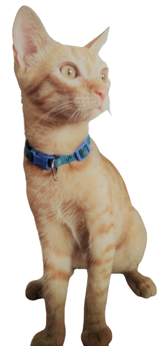

Datos sobre Ruso Miguel
SOY UN GATO MESTIZO, NARANJA ESTILO TABBY, DE OJOS AMARILLO Y NARIZ ROSA.
Tengo 2 años y peso 4 kilos. Tengo todas mis vacunas. También me conocen como “EL MICHI MIAU”.
Me gusta la comida seca, la comida humeda. Soy fan del churu y del catnip
Mis actividades preferidas son: dormir, comer, morder y gritarle a Karen
Me molesto si no me arropan para dormir y no me gusta la ropa para gatos
¿De dónde es Ruso Miguel?
Nací en Huacho, pero ahora vivo en la ciudad de Lima, Perú. En el distrito Santiago de Surco
"
Datos Extra
- Fui un regalo que no gustó, por lo que me devolvieron. Mi Karen me rescató
- Soy muy sociable, no me escondo cuando vienen a visitarme
- Me gusta ayudar a Karen y a Karencio cuando se sienten mal, soy el gato enfermero
- Uno de mis hobbies es el avistamiento de aves urbanas